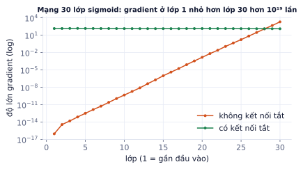
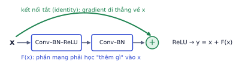
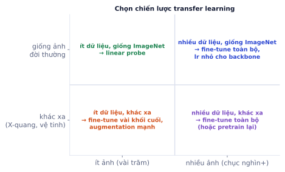
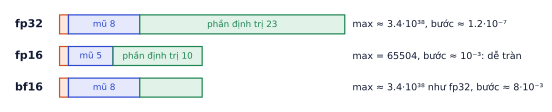
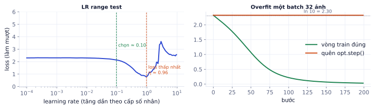

Trong công việc thật, gần như không ai train CNN từ đầu. Ta lấy một model đã học trên hàng triệu ảnh (ImageNet) rồi chuyển giao sang bài toán của mình với vài trăm ảnh. Bài này giải thích vì sao ResNet train được rất sâu, cách fine-tune đúng, cách train nhanh hơn bằng mixed precision, và cách debug khi training không chạy.
Vanishing gradient và ResNet
Vì sao cần học
Mạng sâu hơn học được đặc trưng phức tạp hơn, nhưng trước năm 2015 người ta không train nổi mạng quá khoảng 20 lớp: thêm lớp còn làm kết quả tệ đi. ResNet giải quyết điều đó bằng một thay đổi một dòng, và ý tưởng của nó có mặt trong mọi model lớn hiện nay, kể cả Transformer và LLM.
Gradient bị nhân nhỏ dần qua các lớp
Khi backprop, gradient ở lớp đầu là tích của đạo hàm qua mọi lớp phía sau (quy tắc dây chuyền). Nếu mỗi lớp nhân với một số nhỏ hơn 1, tích đó co lại theo cấp số nhân.
Ví dụ từng bước
Đạo hàm của sigmoid tối đa là 0.25. Qua 10 lớp sigmoid, gradient bị nhân với tối đa 0.25¹⁰ ≈ 9.5 × 10⁻⁷: lớp đầu nhận gradient nhỏ hơn một phần triệu so với lớp cuối, gần như không học được gì.

Đo thật trên mạng 30 lớp sigmoid khởi tạo ngẫu nhiên: không có kết nối tắt, gradient tắt dần về phía đầu vào. Có kết nối tắt, mọi lớp nhận gradient cỡ như nhau.
ReLU (P2.1) giảm bớt vấn đề, BatchNorm (P2.2) giúp thêm, nhưng với 50–100 lớp vẫn chưa đủ.
Kết nối tắt
ResNet cho đầu ra của mỗi block là x + F(x) thay vì F(x): block chỉ cần học phần chênh lệch (residual) cần cộng thêm vào đầu vào.
y = x + F(x) ⇒ ∂y/∂x = 1 + ∂F/∂x

Một residual block: hai lớp conv học F(x), đường tắt mang x đi thẳng tới phép cộng.
Số 1 trong đạo hàm là "đường cao tốc" cho gradient: dù F học gì (kể cả khi ∂F/∂x rất nhỏ), gradient vẫn đi thẳng về các lớp trước. Thêm một block mới cũng không thể làm mạng tệ đi nhiều: nếu block đó vô ích, nó chỉ cần học F(x) ≈ 0 để trở thành phép đồng nhất. Nhờ vậy ResNet train được 50, 101, 152 lớp.
Model
Số lớp
Tham số
Ghi chú
ResNet-18
18
11.7M
nhanh, đủ cho hầu hết bài toán nhỏ
ResNet-50
50
25.6M
"bottleneck block", baseline kinh điển
EfficientNet, ConvNeXt
khác nhau
khác nhau
CNN hiện đại, chính xác hơn với cùng chi phí
ViT (P7)
Transformer
86M (Base)
cần nhiều dữ liệu pretrain hơn
Tự kiểm tra nhanh
Hai block nối tiếp, mỗi block có ∂F/∂x = 0.2 (vô hướng, để đơn giản).
Transfer learning: linear probe và fine-tune
Vì sao cần học
Dữ liệu có nhãn của bạn thường chỉ vài trăm đến vài nghìn ảnh: quá ít để train CNN từ đầu. Model pretrained trên ImageNet (1.2 triệu ảnh, 1.000 lớp) đã học được cạnh, hoa văn, hình dạng, bộ phận vật thể. Tái dùng những thứ đó thường cho kết quả tốt hơn hẳn và train trong vài phút thay vì vài ngày.
Backbone và head
Một model phân loại gồm hai phần:
Backbone: toàn bộ các lớp conv, biến ảnh thành một vector đặc trưng (ResNet-18 cho ra 512 số, ResNet-50 cho 2.048 số).
Head: lớp Linear cuối biến vector đặc trưng thành logits của các lớp.
Transfer learning giữ backbone, thay head bằng một lớp mới có số đầu ra đúng bằng số lớp của bạn.
Ví dụ từng bước
ResNet-50 cho bài phân loại 5 loại lá cây: head mới Linear(2048, 5) có 2.048 × 5 + 5 = 10.245 tham số. Backbone có khoảng 23.5 triệu tham số đã học sẵn. Với linear probe, bạn chỉ train 10.245 tham số đó: rất nhanh, khó overfit.
Hai cách dùng
Linear probe
Fine-tune toàn bộ
Train gì
chỉ head mới
mọi lớp
Dữ liệu cần
rất ít (vài chục ảnh mỗi lớp)
nhiều hơn
Tốc độ
rất nhanh, có thể tính sẵn đặc trưng một lần
chậm hơn
Rủi ro
trần thấp nếu dữ liệu khác xa ImageNet
phá hỏng đặc trưng pretrained nếu lr lớn

Chọn chiến lược theo hai câu hỏi: có bao nhiêu ảnh, và ảnh của bạn giống ảnh đời thường đến đâu.
Công thức hai giai đoạn
Cách làm phổ biến và an toàn:
Giai đoạn 1 (linear probe): khóa backbone, train head mới vài epoch với lr khoảng 1e-3. Head ngẫu nhiên lúc đầu tạo gradient lớn và vô nghĩa; khóa backbone để gradient đó không phá hỏng các lớp đã học.
Giai đoạn 2 (fine-tune): mở khóa toàn bộ, train tiếp với learning rate nhỏ cho backbone (thường bằng 1/10 lr của head).
importtorch,torchvisionm=torchvision.models.resnet18(weights="IMAGENET1K_V1")m.fc=torch.nn.Linear(m.fc.in_features,num_classes)# head mới: 512 → num_classes# Giai đoạn 1: linear probeforpinm.parameters():p.requires_grad=Falseforpinm.fc.parameters():p.requires_grad=Trueopt=torch.optim.AdamW(m.fc.parameters(),lr=1e-3)# ... train vài epoch ...# Giai đoạn 2: fine-tune toàn bộ, backbone lr nhỏ hơnforpinm.parameters():p.requires_grad=Trueopt=torch.optim.AdamW([{"params":m.fc.parameters(),"lr":1e-3},{"params":[pforn,pinm.named_parameters()ifnotn.startswith("fc")],"lr":1e-4},],weight_decay=0.01)
Chuẩn hóa và kích thước giống lúc pretrain
Model pretrained "quen" với ảnh đã chuẩn hóa theo mean/std của ImageNet: mean (0.485, 0.456, 0.406), std (0.229, 0.224, 0.225), kích thước khoảng 224×224. Dùng cùng các giá trị đó; dùng mean/std của dữ liệu riêng hoặc quên chuẩn hóa sẽ làm đặc trưng sai lệch. Cách chắc chắn nhất: lấy transform đi kèm trọng số.
weights=torchvision.models.ResNet18_Weights.IMAGENET1K_V1preprocess=weights.transforms()# resize, crop, chuẩn hóa đúng như lúc pretrain
Lỗi hay gặp
Learning rate quá lớn khi fine-tune. Dùng lr 1e-3 cho cả backbone ngay từ đầu (như khi train từ đầu) thường làm accuracy tụt mạnh ở epoch đầu rồi không hồi phục: các đặc trưng tốt đã bị ghi đè. Triệu chứng: fine-tune toàn bộ còn tệ hơn linear probe. Giảm lr backbone xuống 1e-4 hoặc 1e-5.
Lỗi hay gặp
Quên BatchNorm khi khóa backbone.requires_grad = False khóa trọng số nhưng không khóa running mean/var của BatchNorm: ở chế độ train(), chúng vẫn bị cập nhật theo dữ liệu của bạn. Với batch nhỏ, điều đó có thể làm hỏng backbone. Khi linear probe, đặt các lớp BatchNorm của backbone ở chế độ eval(), hoặc tính sẵn đặc trưng một lần rồi train head trên đó.
Đào sâu thêm
Feature extraction một lần. Với linear probe, backbone không đổi, nên có thể chạy backbone qua toàn bộ tập train một lần, lưu vector 512 chiều của mỗi ảnh, rồi train hồi quy logistic (P1.1) trên các vector đó. Nhanh hơn hàng chục lần so với chạy lại backbone mỗi epoch, và là cách tốt để thử nhanh xem transfer learning có hợp với dữ liệu của bạn không. Cùng ý tưởng này dùng embedding cho văn bản ở P4 và CLIP ở P7.
Mixed precision và tốc độ
Vì sao cần học
GPU hiện đại tính ở 16 bit nhanh hơn 32 bit nhiều lần và cần một nửa bộ nhớ. Bật mixed precision thường chỉ thêm 3 dòng code mà train nhanh hơn 1,5–3 lần, hoặc cho phép batch lớn hơn gấp đôi.
Ba định dạng số thực

Số bit cho phần mũ quyết định khoảng giá trị (lớn nhất, nhỏ nhất); số bit cho phần định trị quyết định độ chính xác. bf16 giữ khoảng giá trị của fp32 nhưng chính xác kém hơn.
Định dạng
Số lớn nhất
Khoảng cách giữa hai số gần 1
Hay gặp vấn đề
fp32
3.4 × 10³⁸
1.2 × 10⁻⁷
chậm, tốn bộ nhớ
fp16
65.504
9.8 × 10⁻⁴
tràn: 70.000 thành inf; số rất nhỏ như 10⁻⁸ thành 0
bf16
3.4 × 10³⁸
7.8 × 10⁻³
kém chính xác hơn fp16, nhưng hầu như không tràn
Ví dụ từng bước
Bộ nhớ trọng số của ResNet-50 (25.6 triệu tham số): fp32 cần 25.6M × 4 byte = 102.4 MB, bf16 cần 51.2 MB. Khi train, bộ nhớ chủ yếu dành cho activation (đầu ra trung gian của mọi lớp, lưu lại cho backward) và trạng thái optimizer, nên tiết kiệm thật còn lớn hơn ở phần activation.
Mixed precision trong PyTorch
"Mixed" vì không phải mọi thứ đều ở 16 bit: trọng số gốc và bước cập nhật vẫn ở fp32, chỉ forward/backward chạy ở 16 bit. Một số phép nhạy cảm (softmax, loss, norm) được autocast tự giữ ở fp32.
scaler=torch.amp.GradScaler()# chỉ cần cho fp16forx,yintrain_loader:opt.zero_grad()withtorch.autocast(device_type="cuda",dtype=torch.float16):loss=F.cross_entropy(model(x),y)scaler.scale(loss).backward()# nhân loss lên để gradient nhỏ không thành 0scaler.step(opt)# chia lại trước khi cập nhật, bỏ bước nếu có infscaler.update()
Với bf16 (GPU A100, H100, RTX 30xx trở lên) không cần GradScaler vì bf16 không bị tràn số nhỏ; chỉ cần autocast(..., dtype=torch.bfloat16). Colab T4 không hỗ trợ bf16 nhanh, dùng fp16 + GradScaler.
Dữ liệu cũng phải nhanh
GPU nhanh mà dữ liệu nạp chậm thì GPU ngồi chờ. Nếu GPU utilization trong nvidia-smi thường dưới 70%, nút thắt là dữ liệu:
DataLoader(num_workers=số nhân CPU, pin_memory=True, persistent_workers=True)
Lưu ảnh ở kích thước gần với kích thước train (không giải nén ảnh 4K để rồi resize về 224 mỗi epoch).
Đặt dữ liệu trên ổ đĩa cục bộ của máy train, không đọc qua mạng (trên Colab: chép từ Drive vào /content trước khi train).
Debug training
Vì sao cần học
Code deep learning sai thường không báo lỗi: nó chạy, loss giảm một chút, và cho kết quả tệ. Một quy trình kiểm tra có thứ tự giúp tìm lỗi trong vài phút thay vì vài ngày.
Khi training không chạy, kiểm tra theo thứ tự:
1. Loss ban đầu có hợp lý không
Phân loại K lớp với model vừa khởi tạo phải có loss gần ln K (10 lớp: 2.30, 100 lớp: 4.61). Lệch xa (ví dụ 15 hoặc nan) là có lỗi khởi tạo, nhãn, hoặc đã đưa softmax vào trước cross-entropy.
2. Overfit một batch
Lấy một batch cố định (ví dụ 32 ảnh), train lặp lại vài trăm bước. Một model đủ lớn phải học thuộc được 32 ảnh: loss về gần 0. Không về 0 thì chắc chắn có bug.

Trái: LR range test. Phải: vòng train đúng đưa loss của một batch từ 2.32 về 0.03; vòng train quên `opt.step()` thì loss đứng yên ở ln 10.
Triệu chứng khi overfit một batch
Thường là
Loss đứng yên
quên opt.step(), requires_grad=False nhầm, lr = 0
Loss giảm rất chậm
lr quá nhỏ, nhãn bị xáo trộn so với ảnh
Loss thành nan
lr quá lớn, log của 0, chia cho 0, fp16 tràn
Loss dao động không giảm
quên zero_grad(), lr quá lớn
3. Nhìn dữ liệu sau transform
Vẽ một batch sau khi qua DataLoader (đảo chuẩn hóa để hiển thị), kèm nhãn. Rất nhiều lỗi chỉ thấy bằng mắt: ảnh bị đảo kênh màu (BGR thay vì RGB), bị xoay, nhãn lệch so với ảnh, augmentation quá mạnh làm vật thể biến mất.
4. Chọn learning rate bằng LR range test
Train vài trăm bước, tăng lr theo cấp số nhân từ rất nhỏ (1e-6) tới rất lớn (1), ghi loss. Loss sẽ đi ngang (lr quá nhỏ), giảm nhanh, rồi bùng nổ. Chọn lr nhỏ hơn khoảng 10 lần so với điểm loss thấp nhất. Ở hình trên, loss thấp nhất tại η ≈ 0.96 nên chọn khoảng 0.1.
5. Đọc learning curve
Train và val cùng cao là underfit (model yếu, train chưa đủ); cách xa nhau là overfit (P1.2, P2.2). Luôn log cả hai, kèm learning rate, theo từng epoch.
Ghi nhớ: overfit một batch trước khi train thật. Năm phút kiểm tra này tiết kiệm hàng giờ GPU.
Tự kiểm tra nhanh
Bài phân loại 100 loại chim, model vừa khởi tạo.
Tóm tắt bài và thuật ngữ
Chủ đề
Điều cần nhớ
Vanishing gradient
tích đạo hàm nhỏ hơn 1 qua nhiều lớp làm lớp đầu không học
ResNet
y = x + F(x), gradient luôn có đường đi thẳng
Transfer learning
backbone pretrained + head mới
Hai giai đoạn
linear probe trước, fine-tune với lr backbone nhỏ sau
Chuẩn hóa
dùng đúng mean/std và kích thước lúc pretrain
Mixed precision
autocast + GradScaler (fp16) hoặc bf16
Debug
loss ban đầu ≈ ln K → overfit một batch → nhìn dữ liệu → LR range test → learning curve
Thuật ngữ
Nghĩa
residual / skip connection
kết nối tắt cộng đầu vào vào đầu ra của block
backbone / head
phần trích đặc trưng / lớp phân loại cuối
pretrained
đã train sẵn trên dữ liệu lớn
transfer learning
chuyển kiến thức từ bài toán này sang bài toán khác
linear probe
chỉ train head, khóa backbone
fine-tuning
train tiếp toàn bộ (hoặc một phần) model pretrained
freeze
khóa tham số, không cập nhật
feature extraction
dùng backbone để biến ảnh thành vector đặc trưng
mixed precision
train kết hợp 16 bit và 32 bit
fp16 / bf16
hai định dạng số thực 16 bit
GradScaler
nhân loss để gradient fp16 không bị làm tròn về 0
activation memory
bộ nhớ lưu kết quả trung gian cho backward
GPU utilization
tỉ lệ thời gian GPU đang tính
LR range test
quét learning rate để chọn giá trị tốt
Ô tự chấm đã giải đúng0 / 3
Bài 1
Gradient qua kết nối tắt
tính tay
Một chuỗi 3 block, mỗi block có đạo hàm cục bộ ∂F/∂x = 0.5. Gradient từ phía sau truyền về là 1.
Lời giải
Không tắt: 0.5³ = 0.125, với 30 block thì còn 0.5³⁰ ≈ 10⁻⁹. Có tắt: mỗi block nhân (1 + 0.5), được 1.5³ = 3.375. Trong thực tế đạo hàm có thể âm và BatchNorm giữ độ lớn ổn định, nhưng ý chính là đường tắt không để gradient tắt dần.
Bài 2
Thay head cho ResNet-18
tính tay
ResNet-18 có 512 đặc trưng trước lớp cuối. Bạn phân loại 10 loại sản phẩm nội thất.
Lời giải
Linear(512, 10): 512·10 + 10 = 5130. So với khoảng 11,7 triệu tham số của cả mạng, linear probe chỉ train 0,04% số tham số, nên rất nhanh và khó overfit.
Bài 3
Bộ nhớ trọng số
tính tay
ResNet-18 có khoảng 11,7 triệu tham số. 1 MB = 10⁶ byte.
Lời giải
fp32 dùng 4 byte mỗi số: 46,8 MB. bf16 dùng 2 byte: 23,4 MB. Khi train còn có gradient, trạng thái optimizer (Adam lưu thêm 2 số mỗi tham số) và activation, nên bộ nhớ thật lớn hơn nhiều lần.
Bài 4
Chọn chiến lược
khái niệm
Chọn linear probe hay fine-tune toàn bộ cho từng tình huống, và giải thích:
50 ảnh mỗi lớp, phân loại 5 giống chó.
20.000 ảnh X-quang phổi, 3 lớp bệnh.
300 ảnh mỗi lớp, phân loại lỗi bề mặt sản phẩm trong nhà máy.
Lời giải
Linear probe: ImageNet đã có nhiều giống chó, đặc trưng sẵn rất phù hợp, dữ liệu ít.
Fine-tune toàn bộ: ảnh X-quang khác xa ảnh tự nhiên và có nhiều dữ liệu.
Bắt đầu bằng linear probe làm baseline, rồi fine-tune với lr nhỏ cho backbone. Lỗi bề mặt là chi tiết nhỏ, đặc trưng ImageNet có thể chưa đủ.
Bài 5
Debug một vòng train hỏng
code
Đoạn code dưới train không lên (loss đứng yên quanh 2.3 với 10 lớp). Tìm ba lỗi.
Tự gom một bộ ảnh nhỏ (ví dụ ảnh sản phẩm nội thất: bàn trang điểm, gương, ghế, kệ, đèn), khoảng 80–150 ảnh mỗi lớp, rồi fine-tune.
Các bước
Xếp ảnh theo thư mục data/train/<tên lớp>/, data/val/<tên lớp>/, data/test/<tên lớp>/ (70/15/15). Dùng torchvision.datasets.ImageFolder.
Transform: train có RandomResizedCrop(224), RandomHorizontalFlip, ColorJitter nhẹ; val/test chỉ Resize(256) + CenterCrop(224). Chuẩn hóa theo mean/std ImageNet.
Giai đoạn 1: linear probe 5 epoch, lr 1e-3.
Giai đoạn 2: mở khóa toàn bộ, fine-tune 10 epoch, lr backbone 1e-4, head 1e-3, cosine schedule, mixed precision.
Vẽ learning curve, confusion matrix trên test, và hiển thị 8 ảnh bị đoán sai kèm xác suất.
So sánh 3 cấu hình trong một bảng: train từ đầu, linear probe, fine-tune.
Xong khi
Accuracy test ≥ 90% với fine-tune.
Bảng so sánh 3 cấu hình, kèm giải thích vì sao fine-tune thắng.
README giải thích các lỗi còn lại dựa trên ảnh bị đoán sai.